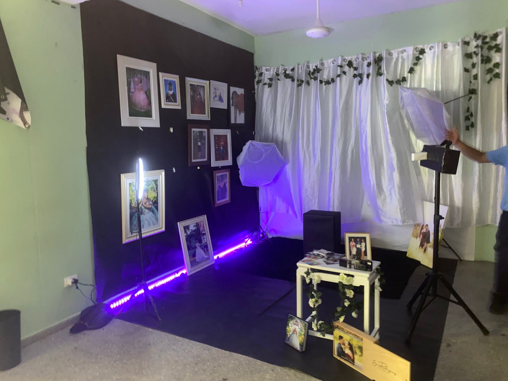

Especialidad técnica del Politécnico Prof. Plinio Martínez.

Formaciónn vinculada con ventas, promoción, servicio al cliente, emprendimiento y estrategias comerciales.
CurrículoLa especialidad integra prácticas, proyectos, exposiciones y actividades colaborativas que conectan el aprendizaje con situaciones reales.